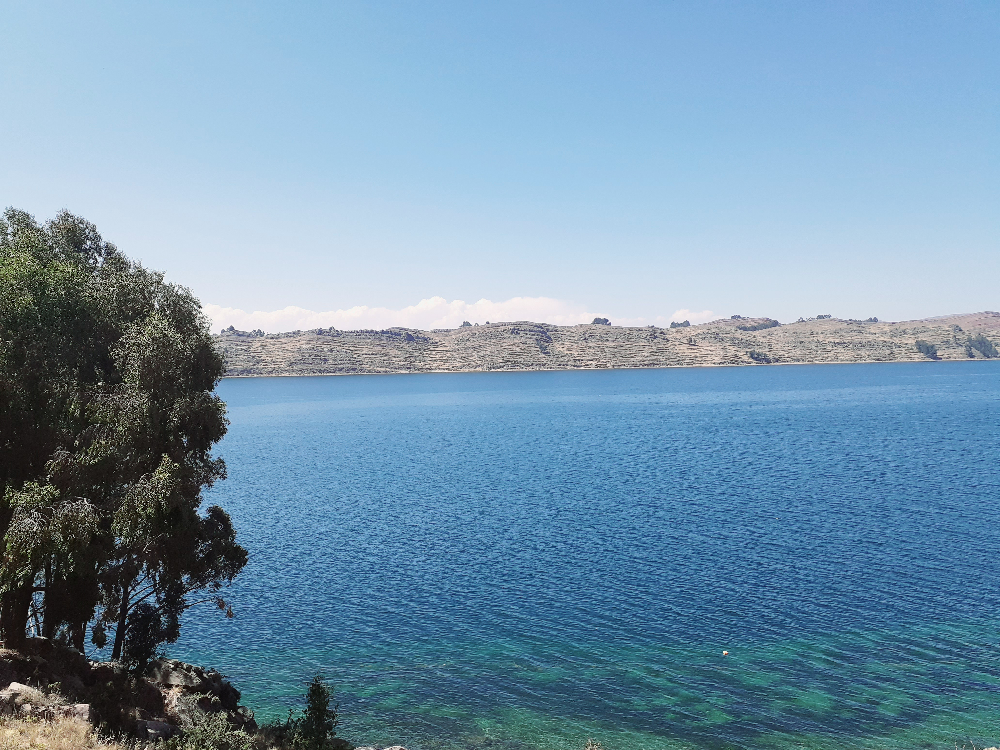

MUSICA
IMPORTANCIA :
La Marinera y Pandilla Puneña es una danza mestiza originaria de la ciudad de Puno, que actualmente se practica en todo el Perú, esta tiene un ritmo pausado pero alegre, y se danza en la época de los Carnavales. Dicha danza, se originó en la época de la colonia, según data los escritos del Instituto Nacional de Cultura en Puno, tiene como origen formal el año de 1907, donde inicia formalmente en la ciudad de Puno.
La música es una expresión de adoración.
MENSAJE
La Marinera y Pandilla Puneña es una danza mestiza originaria de la ciudad de Puno, que actualmente se practica en todo el Perú, esta tiene un ritmo pausado pero alegre, y se danza en la época de los Carnavales. Dicha danza, se originó en la época de la colonia, según data los escritos del Instituto Nacional de Cultura en Puno, tiene como origen formal el año de 1907, donde inicia formalmente en la ciudad de Puno.
|  |